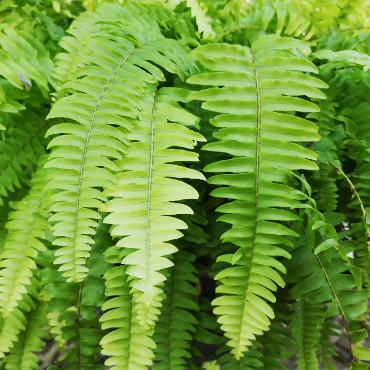
Samambaia-mato
Nephrolepis exaltata
Família · Nephrolepidaceae
Florestas tropicais das Américas; muito cultivada como ornamental em vasos pendentes.
Um mergulho ilustrado pelo mundo das pteridófitas: das fiddleheads que despontam no chão da floresta às espécies medicinais, passando pelos misteriosos esporos e por seus parentes ancestrais.
Capítulo I · O lugar das samambaias
As samambaias formam um grupo botânico próprio — as pteridófitas.
Existem milhares de espécies de samambaias espalhadas por diferentes regiões do mundo.
Capítulo II · Anatomia & habitat
Na maioria das samambaias, o caule é um rizoma — um caule horizontal que cresce sob o solo (ou rente a ele, sobre troncos e pedras, no caso das epífitas). Dele partem as raízes para baixo e, para cima, brotam as folhas chamadas frondes.
O que vemos crescer acima da terra são, portanto, as folhas. Cada fronde nasce enrolada como um pequeno báculo de bispo — a famosa crosier ou fiddlehead — e vai se desenrolando à medida que cresce.
Ambiente ideal: samambaias prosperam onde há sombra, umidade e solo rico em matéria orgânica. Beiras de rios, sub-bosques de florestas tropicais, paredões de pedra úmidos e matas de neblina são seus lugares preferidos. Algumas, como o xaxim, formam verdadeiras florestas no sul do Brasil; outras vivem boiando, como a Salvinia.
Onde houver sombra fresca e um pouco de água, é quase certo que haverá uma samambaia.
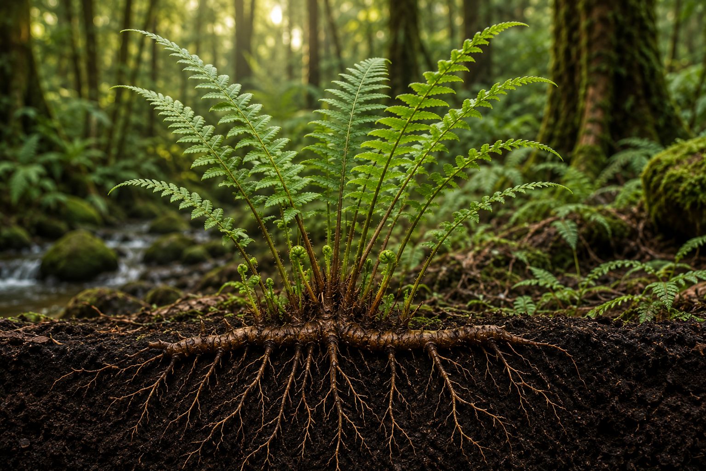
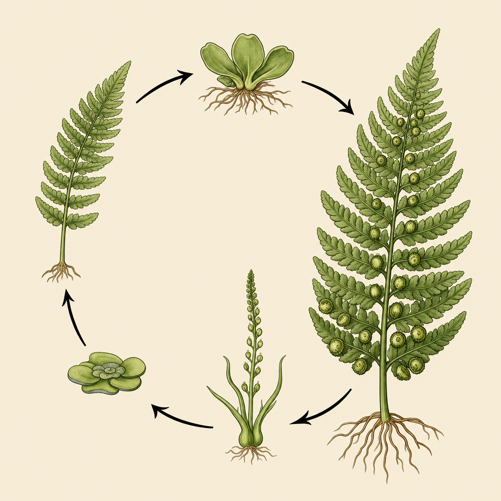
Capítulo III · Reprodução
As samambaias não têm flores nem sementes. Sua reprodução acontece em duas gerações alternadas:
1. Esporófito — a planta que conhecemos. Na parte de baixo das frondes formam-se os soros, pequenos pontos que reúnem os esporângios. Quando maduros, os esporângios se abrem como minúsculas catapultas e lançam os esporos no ar.
2. Gametófito (protalo) — o esporo cai em local úmido e germina numa pequena lâmina verde em forma de coração, do tamanho de uma unha. Nela se formam os gametas masculinos e femininos. Com uma película de água, o espermatozoide nada até a oosfera e ocorre a fecundação.
Da fecundação nasce uma nova samambaia adulta, fechando o ciclo.
Os soros mudam de forma, posição e cobertura conforme a espécie. Observe três exemplos clássicos:
Dryopteris filix-mas (samambaia-macho)
Pequenos pontos circulares alinhados em duas fileiras ao longo da nervura central de cada pina, protegidos por uma membrana em forma de rim (indúsio reniforme).
Asplenium nidus (samambaia-ninho)
Os soros formam linhas alongadas que partem da nervura central em direção à borda, parecendo finas pinceladas marrons na face inferior da folha.
Pteridium aquilinum (samambaia-do-campo)
Soros formam uma faixa contínua ao longo de toda a borda da folha, protegida pela própria margem da pina enrolada (falso indúsio).
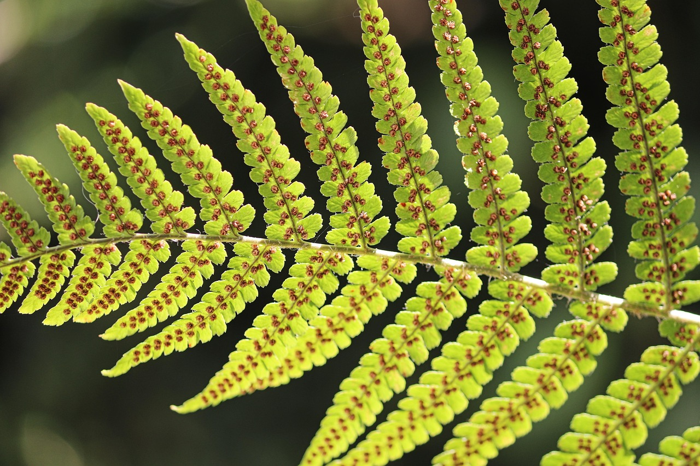
Capítulo IV · A viagem do esporo
Os esporos das samambaias são microscópicos e leves como poeira. Quando o esporângio amadurece e seca, ele se contorce de repente e arremessa os esporos no ar, como uma pequena catapulta. A partir daí, eles podem ser carregados:
• Principalmente pelo vento, percorrendo às vezes centenas de quilômetros;
• Pela água da chuva e de riachos;
• Grudados em penas de aves, pelos de animais ou nas roupas e botas das pessoas.
De um esporo até uma samambaia adulta podem se passar de 1 a 4 anos — em algumas espécies, ainda mais.
Pousa em local úmido e sombreado. Germina em poucos dias.
Pequena lâmina verde em forma de coração, com poucos milímetros, leva semanas a meses.
Após a fecundação, surge uma minúscula folha enrolada — a primeira fronde.
Em 1 a 4 anos a planta forma rizoma e novas frondes capazes de produzir esporos.
Samambaia jovem × adulta: a jovem tem poucas frondes pequenas, folhas mais simples (às vezes inteiras), nervuras menos ramificadas e nenhum soro. A adulta exibe frondes grandes, muito divididas e, nas frondes férteis, os soros marrons na face inferior.
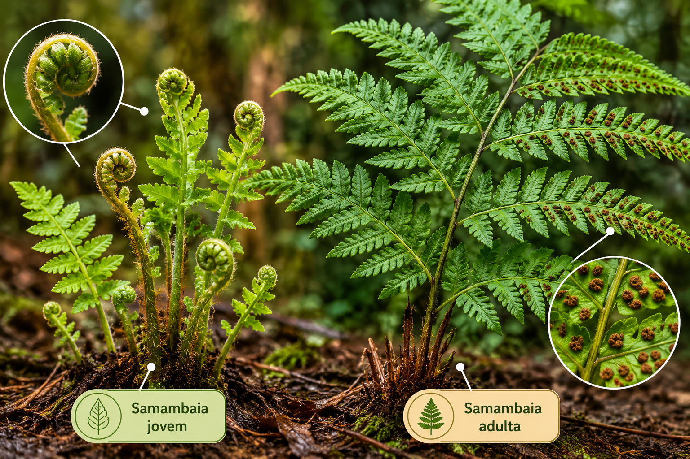
Capítulo V · Farmácia da floresta
Diversas samambaias são usadas tradicionalmente como remédio. Três das mais conhecidas:
Adiantum capillus-veneris
Folhas em chá são usadas como expectorante e calmante para a tosse, bronquites e gripes. Também tradicionalmente associada à saúde dos cabelos.
Pteridium aquilinum
O rizoma já foi usado contra vermes intestinais e como cicatrizante em uso externo. Atenção: contém substâncias tóxicas; só sob orientação.
Phlebodium aureum
Usada na América Latina como anti-inflamatório e em problemas de pele (psoríase, dermatites), além de auxiliar do sistema imunológico.
Capítulo VI · Herbário
Nome popular, nome científico, família e onde podem ser encontradas — uma pequena coleção ilustrada do nosso herbário verde.

Nephrolepis exaltata
Família · Nephrolepidaceae
Florestas tropicais das Américas; muito cultivada como ornamental em vasos pendentes.
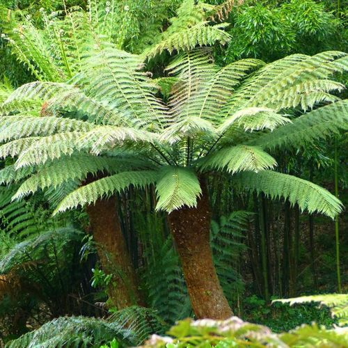
Dicksonia sellowiana
Família · Dicksoniaceae
Mata Atlântica e Araucária no sul/sudeste do Brasil; samambaia arborescente, espécie ameaçada.
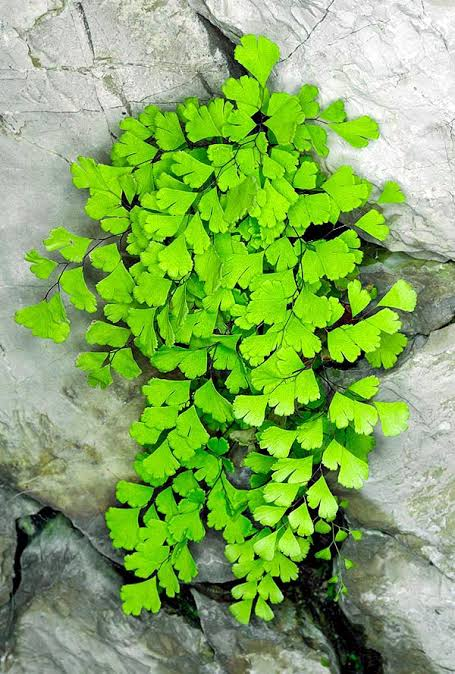
Adiantum capillus-veneris
Família · Pteridaceae
Regiões úmidas e sombreadas do mundo todo; cresce em paredões, grutas e perto de quedas d’água.
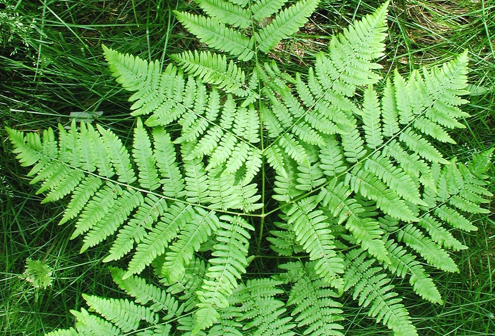
Pteridium aquilinum
Família · Dennstaedtiaceae
Cosmopolita; comum em campos, pastagens e áreas queimadas em quase todo o mundo.
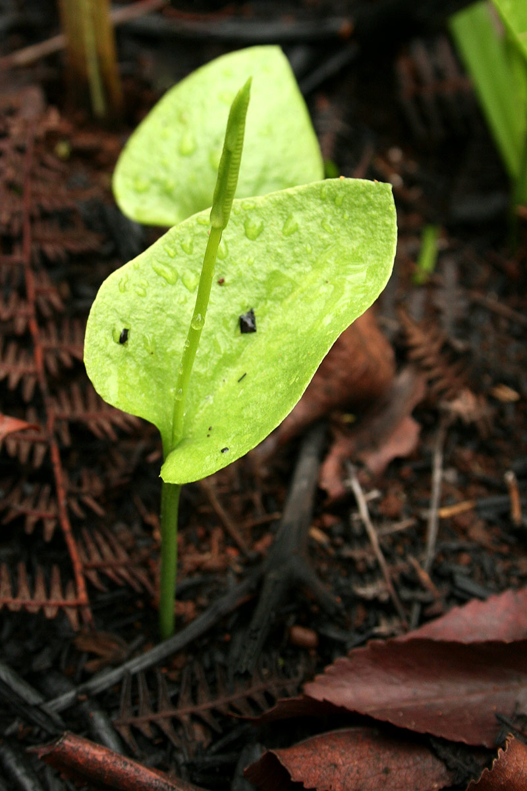
Ophioglossum reticulatum
Família · Ophioglossaceae
Campos úmidos da América tropical; folhas simples, parecidas com uma língua.
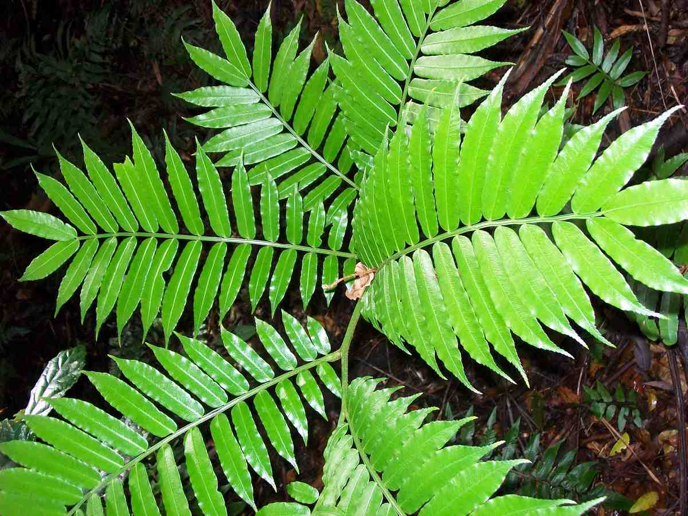
Angiopteris evecta
Família · Marattiaceae
Florestas tropicais úmidas do Pacífico e Sudeste Asiático; folhas gigantes, podem passar de 5 m.
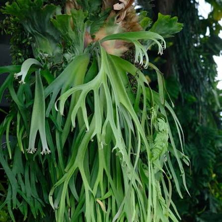
Platycerium bifurcatum
Família · Polypodiaceae
Epífita das florestas da Austrália e Nova Guiné; cresce sobre troncos, sem precisar de solo.
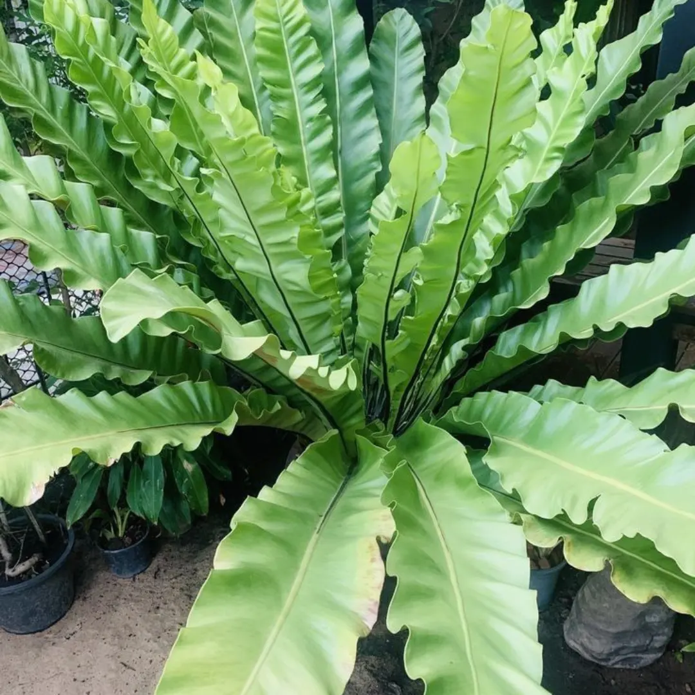
Asplenium nidus
Família · Aspleniaceae
Florestas tropicais da Ásia, África e Oceania; epífita em forma de ninho de pássaro.
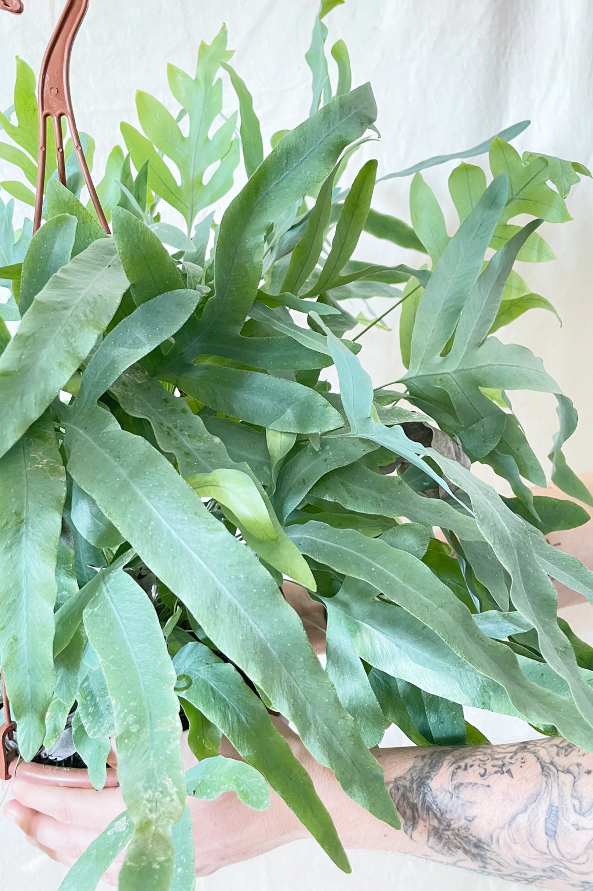
Phlebodium aureum
Família · Polypodiaceae
Américas tropicais; epífita em palmeiras, com folhas glaucas (azuladas) e rizoma peludo dourado.
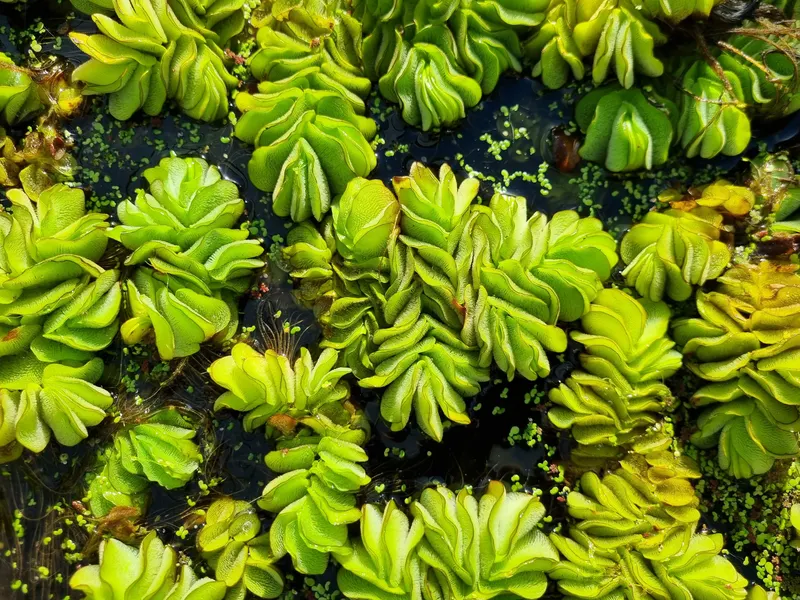
Salvinia auriculata
Família · Salviniaceae
Lagoas, açudes e rios calmos da América tropical; flutua na superfície da água.
Capítulo VII · Parentes ancestrais
Além das samambaias “comuns”, existem outras plantas vasculares sem sementes — as licófitas (licopódios) e as equisetófitas (cavalinhas). Todas reúnem-se no antigo grupo das pteridófitas.
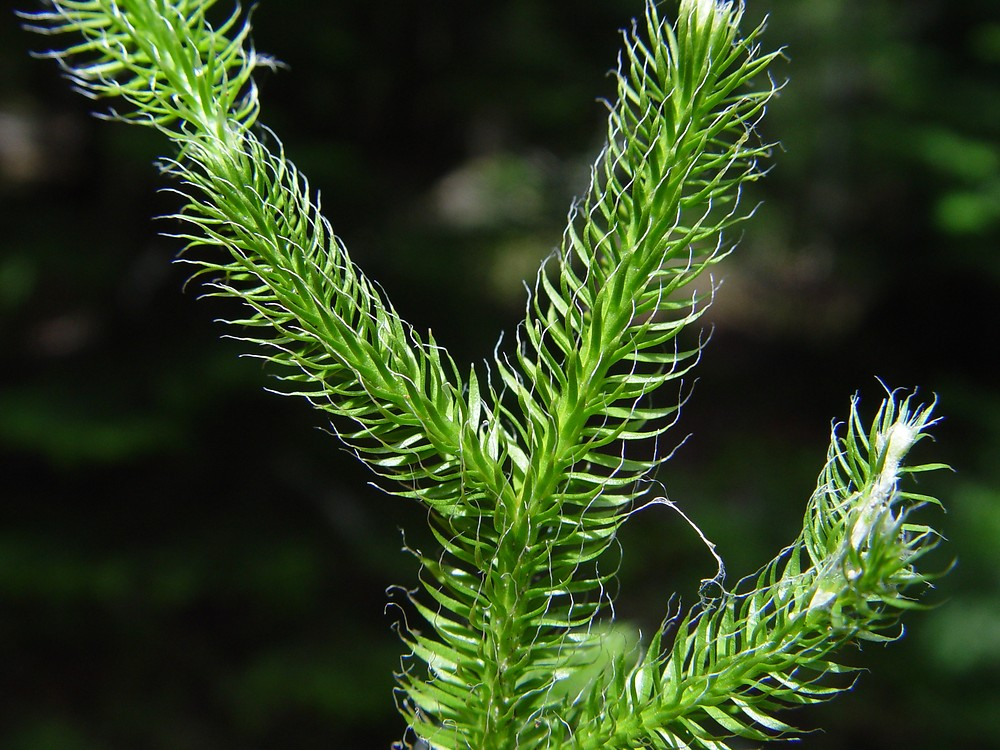
Lycopodium clavatum
Família · Lycopodiaceae
Encostas úmidas e campos de altitude na América, Europa e Ásia; rastejante, com hastes parecidas com mini-pinheiros.
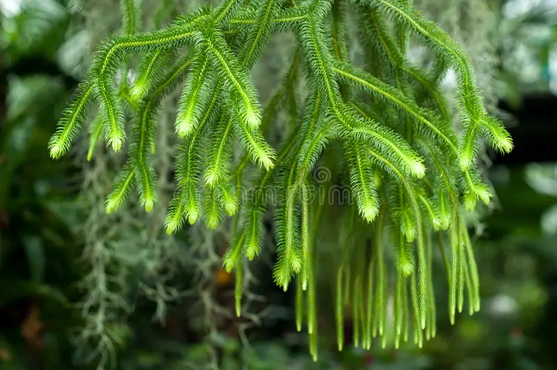
Huperzia squarrosa
Família · Lycopodiaceae
Florestas tropicais da Ásia e Oceania; epífita pendente, cultivada como ornamental.
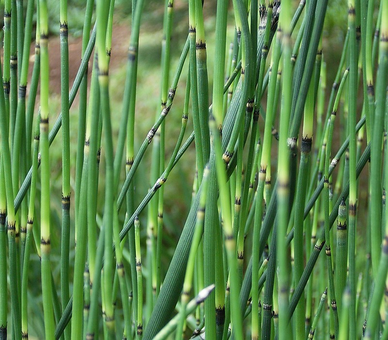
Equisetum giganteum
Família · Equisetaceae
Brejos e margens de rios nas Américas; caules ocos articulados, ricos em sílica, usada como chá medicinal.
Licopódios e cavalinhas compartilham com as samambaias as marcas profundas das pteridófitas:
• Não produzem flores nem sementes — reproduzem-se por esporos, geralmente reunidos em
estruturas chamadas estróbilos.
• Possuem vasos condutores (xilema e floema), o que as separa de musgos e hepáticas.
• Têm ciclo de vida com alternância de gerações e dependem de água para a fecundação.
• São plantas muito antigas: nas florestas do Carbonífero, licopódios e cavalinhas eram árvores
gigantes que originaram boa parte do carvão mineral que usamos hoje.
Por isso, mesmo sendo bem diferentes das samambaias na aparência, são considerados seus primos botânicos.
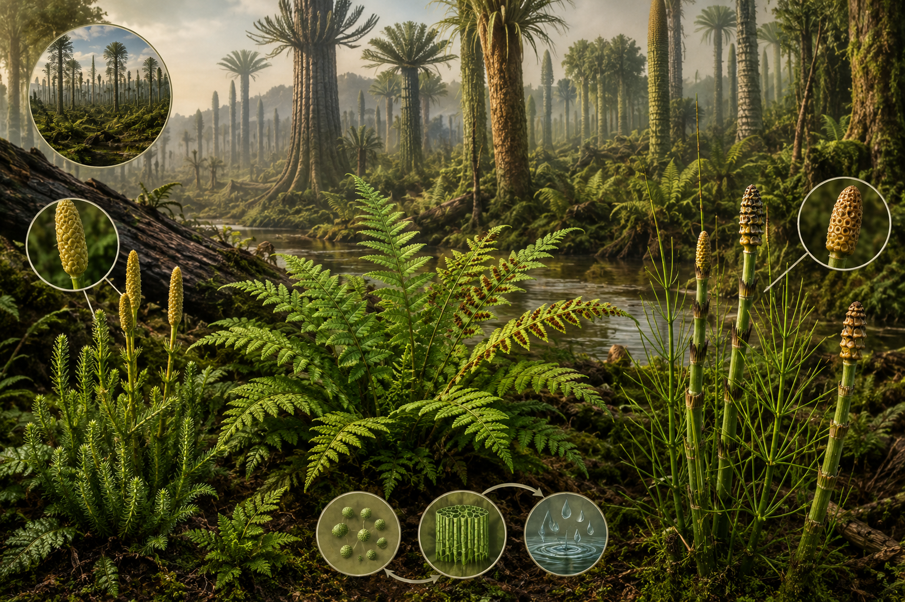
Curiosidades
Estima-se que existam mais de doze mil espécies de samambaias hoje, distribuídas em quase todos os ambientes do planeta — do Ártico aos trópicos.
O protalo, fase “bebê” da samambaia, mede poucos milímetros e mal aparece a olho nu. Dele nasce uma fronde que pode crescer metros.
As fiddleheads (báculos jovens) seguem a espiral logarítmica, a mesma proporção áurea encontrada em conchas e galáxias.
Para os Maori da Nova Zelândia, a fronde enrolada (koru) representa vida nova, crescimento e paz — virou símbolo nacional.
A cavalinha é rica em sílica e era usada para polir madeira e metais. Hoje é usada em chás para fortalecer unhas, cabelos e o sistema urinário.